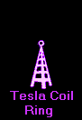
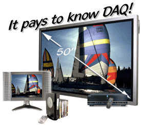

| systems |
| home page |
| com Products Downloads Support Register Search Misc . . Xteq Systems Products Products Downloads Support Register Search Misc Xteq Systems - Do more faster. Products from Xteq Systems All programs from Xteq Systems are freeware for most users, so you can use our programs at no cost. However, you can still download the original archive or the source code of it. |
|  |
|  |